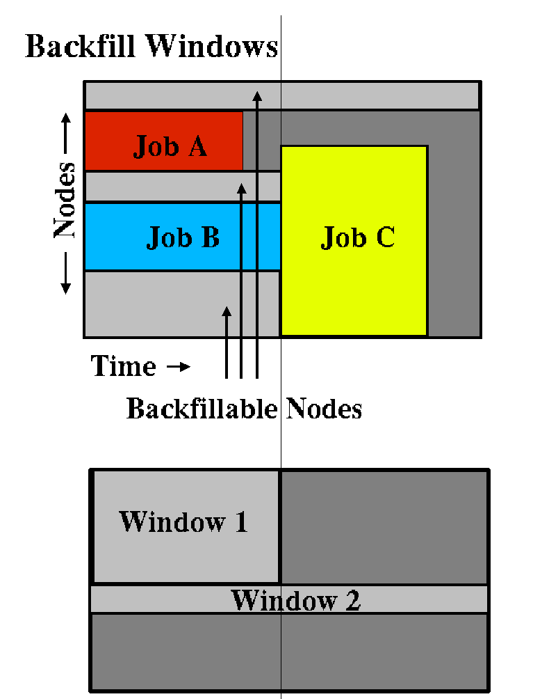

8.2 Backfill
8.2.1 Backfill Overview
Backfill is a scheduling optimization which allows a scheduler to make better use of available resources by running jobs out of order. When Maui schedules, it prioritizes the jobs in the queue according to a number of factors and then orders the jobs into a 'highest priority first' sorted list. It starts the jobs one by one stepping through the priority list until it reaches a job which it cannot start. Because all jobs and reservations possess a start time and a wallclock limit, Maui can determine the completion time of all jobs in the queue. Consequently, Maui can also determine the earliest the needed resources will become available for the highest priority job to start.
Backfill operates based on this 'earliest job start' information. Because Maui knows the earliest the highest priority job can start, and which resources it will need at that time, it can also determine which jobs can be started without delaying this job. Enabling backfill allows the scheduler to start other, lower-priority jobs so long as they do not delay the highest priority job. If Backfill is enabled, Maui, 'protects' the highest priority job's start time by creating a job reservation to reserve the needed resources at the appropriate time. Maui then can any job which not not interfere with this reservation.
Backfill offers significant scheduler performance improvement. In a typical large system, enabling backfill will increase system utilization by around 20% and improve turnaround time by an even greater amount. Because of the way it works, essentially filling in holes in node space, backfill tends to favor smaller and shorter running jobs more than larger and longer running ones. It is common to see over 90% of these small and short jobs backfilled. Consequently, sites will see marked improvement in the level of service delivered to the small, short jobs and only moderate to no improvement for the larger, long ones.
The question arises, is backfill a purely good feature. Doesn't there have to be a trade-off some where? Doesn't there have to be a dark side? Well, there are a few drawbacks to using backfill but they are fairly minor. First of all, because backfill locates jobs to run scattered throughout the idle job queue, it tends to diminish the influence of the job prioritization a site has chosen and thus may negate any desired workload steering attempts through this prioritization. Secondly, although the start time of the highest priority job is protected by a reservation, what is to prevent the third priority job from starting early and possibly delaying the start of the second priority job? Ahh, a problem. Actually, one that is easily handled as will be described later.
The third problem is actually a little more subtle. Consider the following scenario involving the 2 processor cluster shown in figure 1. Job A has a 4 hour wallclock limit and requires 1 processor. It started 1 hour ago and will reach its wallclock limit in 3 more hours. Job B is the highest priority idle job and requires 2 processors for 1 hour. Job C is the next highest priority job and requires 1 processor for 2 hours. Maui examines the jobs and correctly determines that job A must finish in 2 hours and thus, the earliest job B can start is in 2 hours. Maui also determines that job C can start and finish in less than this amount of time. Consequently, Maui starts job C on the idle processor. One hour later, job A completes early. Apparently, the user overestimated the amount of time his job would need by a few hours. Since job B is now the highest priority job, it should be able to run. However, job C, a lower priority job was started an hour ago and the resources needed for job B are not available. Maui re-evaluates job B's reservation and determines that it can be slid forward an hour. At time 3, job B starts.
Ok, now the post-game show. Job A is happy because it ran to completion. Job C is happy because it got to start immediately. Job B is sort of happy because it got to run 1 hour sooner than it originally was told it could. However, if backfill was not enabled, job B would have been able to run 2 hours earlier. Not a big deal, usually. However, the scenario described above actually occurs fairly frequently. This is because the user estimates for how long their jobs will take is generally very bad. Job wallclock estimate accuracy, or wallclock accuracy, is defined as the ratio of wall time required to actually run the job divided by the wall time requested for the job. Wallclock accuracy varies from site to site but the site average is rarely better than 40%. Because the quality of the walltime estimate provided by the user is so low, job reservations for high priority jobs are often later than they need to be.
Although there do exist some minor drawbacks with backfill, its net performance impact on a site's workload is very positive. Although a few of the highest priority jobs may get temporarily delayed, they probably got to their position as highest priority as soon as they did because jobs in front of them got to run earlier due to backfill. Studies have shown that only a very small fraction of jobs are truly delayed and when they are, it is only by a fraction of their total queue time. At the same time, many jobs are started significantly earlier than would have occurred without backfill.
8.2.2 Backfill Algorithm
The algorithm behind Maui backfill scheduling is mostly straightforward although there are a number of issues and parameters of which you should be aware. First of all, Maui makes two backfill scheduling passes. For each pass, Maui selects a list of jobs which are eligible for backfill. On the first pass, only those jobs which meet the constraints of the 'soft' fairness throttling policies are considered and scheduled. The second pass expands this list of jobs to include those which meet the 'hard' (less constrained) fairness throttling policies.
The second important concept regarding Maui backfill is the concept of backfill windows. The figure below shows a simple batch environment containing two running jobs and a reservation for a third job. The present time is represented by the leftmost end of the box with the future moving to the right. The light grey boxes represent currently idle nodes which are eligible for backfill. For this example, lets assume that the space represented covers 8 nodes and a 2 hour timeframe. To determine backfill windows, Maui analyzes the idle nodes essentially looking for 'largest node-time rectangles'. It determines that there are two backfill windows. The first window, Window 1, consists of 4 nodes which are available for only one hour (because some of the nodes are blocked by the reservation for job C). The second window contains only one node but has no time limit because this node is not blocked by the reservation for job C. It is important to note that these backfill windows overlap.
Once the backfill windows have been determined, Maui begins to traverse them. The current behavior is to traverse these windows 'widest window first' (i.e., most nodes to fewest nodes) As each backfill window is evaluated, Maui applies the backfill algorithm specified by the BACKFILLPOLICY parameter, be it FIRSTFIT, BESTFIT, etc.
Assuming the BESTFIT algorithm is applied, the following steps are taken.
1) The list of feasible backfill jobs is filtered, selecting only those which will actually fit in the current backfill window.
2) The 'degree of fit' of each job is determined based on the SCHEDULINGCRITERIA parameter (ie, processors, seconds, processor-seconds, etc)
(ie, if processors is selected, the job which requests the most processors will have the best fit)
3) The job with the best fit is started.
4) While backfill jobs and idle resources remain, repeat step 1.
Other backfill policies behave in a generally similar manner. The parameters documentation can provide further details.
One final important note. By default, Maui reserves only the highest priority job resulting in a very 'liberal' and aggressive backfill. This reservation guarantees that backfilled jobs will not delay the highest priority job, although they may delay the second highest priority job! (Actually, due to wallclock inaccuracies, it is possible the the highest priority job may actually get slightly delayed as well but we won't go into that!) The parameter RESERVATIONDEPTH controls how conservative/liberal the backfill policy is. This parameter controls how deep down the priority queue to make reservations. While increasing this parameter will improve guarantees that priority jobs will not be bypassed, it reduces the freedom of the scheduler to backfill resulting in somewhat lower system utilization. The value of the trade-offs often need to be determined on a site by site basis.
8.2.3 Configuring Backfill
Backfill Policies
Backfill is enabled in Maui by specifying the BACKFILLPOLICY parameter. By default, backfill is enabled in Maui using the FIRSTFIT algorithm. However, this parameter can also be set to BESTFIT, GREEDY, or NONE (disabled).Reservations
The number of reservations which protect the resources required by priority jobs can be controlled using RESERVATIONDEPTH[<X>]. This depth can be distributed across job QOS levels using RESERVATIONQOSLIST[<X>].Backfill Chunking
In a batch environment saturated with serial jobs, serial jobs will, over time, dominate the resources available for backfill at the expense of other jobs. This is due to the time-dimension fragmentation associated with running serial jobs. For example, given an environment with an abundance of serial jobs, if a multi-processor job completes freeing processors, one of three things will happen.- The freed resources are allocated to another job requiring the same number of processors
- Additional jobs may complete at the same time allowing a larger job to allocate the aggregate resources
- The freed resources are allocated to one or more smaller jobs
To address this issue, the scheduler incorporates the concept of backfill chunking. Chunking allows the scheduler to favor case 2 maintaining a more controlled balance between large and small jobs. The idea of chunking involves establishing a time-based threshold during which resources available for backfill will be aggregated. This threshold is set using the parameter BFCHUNKDURATION. When resources are freed, they are made available only to jobs of a certain size (set using the parameter BFCHUNKSIZE) or larger. These resources remain protected from smaller jobs until either additional resources are freed up and a larger job can use the aggregate resources, or until the BFCHUNKDURATION threshold time is expired. NOTE: backfill chunking is only activated when a job of size BFCHUNKSIZE or larger is blocked in backfill due to lack of resources.
It is important to note that the optimal settings for these parameters is very site specific and will depend on the workload, (including the average job turnaround time, job size, and mix of large to small jobs) cluster resources, and other scheduling environmental factors. Setting values which are too restrictive will needlessly reduce utilization while settings which are too relaxed will not allow the desired aggregation to occur. CAVEAT EMPTOR. (NOTE: backfill chunking is only enabled in conjunction with the FIRSTFIT backfill policy.)
 The Moab Cluster ManagerTM aids in managing backfill policies by providing a graphical interface for systems using the Moab Workload ManagerTM.
The Moab Cluster ManagerTM aids in managing backfill policies by providing a graphical interface for systems using the Moab Workload ManagerTM.
See also:
Parameters BACKFILLDEPTHandBACKFILLMETRIC
Reservation Policy Overview.